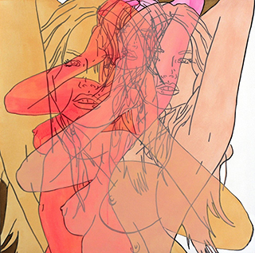

<!doctype html>
<html>
 
<head>
<meta charset="UTF-8">
<title>Hilary Bond</title>
	<!--link to main stylesheet__> <link href="stylesheet.css" rel="stylesheet" type="text/css">
</head>

<body>

<h1 id="top"><em><strong><center>HILARY BOND</center></strong></em></h1>

        <div id=woman>
        
        </div>

        <div id=navigation>
            <ul>
    	       <ul><a href="#statement">Artist Statement</a></ul>
    	       <ul><a href="#paintings">Paintings</a></ul>
    	       <ul><a href="#resume">Resume</a></ul>
    	       <ul><a href="#contact">Contact</a></ul>
                <ul><a href="#links">Links</a></ul>
            </ul>
        </div>	
   

    <h2 id="statement"><a href="#top">Artist Statement</a></h2>  

    <div id=statement>
        
        <p>
  Color, composition, and line, based on the natural and manmade landscapes of Los Angeles influence and support the ideas and subject matter of Hilary Bond.  The city’s diverse culture, consumerism, and importance to American popular media has influenced Bond’s aesthetic choices.  The sky provides colors that are isolated and layered: muted grays from an overcast morning, apocalyptic oranges and reds from the city’s fires. Neons of Hollywood and downtown’s manmade landscapes, pastels echoing Art Deco and the Spanish architecture throughout the city.   Directly referencing printmaking, Bond’s use of glazes with acrylics create a glossy textural surface. Bond adds layers of graffiti markers, latex and enamel paints, creating different visual effects acknowledging street art and consumerism’s influence within her paintings.  Women and the sexualization of the female form, common threads of Pop Media, emerge in Bond’s work. Women and the beauty of their form relate to the artist and viewers personally. The figures are erotic, blank, or empowering.  Bond paints referenced images as well as self-portraiture (selfies), photographing herself and translating the images into drawings on canvas allows for the deeply personal process of evaluating her appearance and mental state.  Selfies acknowledge the importance of online technology, and vanity in our current culture.  Once the figures have been drawn Bond uses layers of colors to obscure the image and create a sense of anonymity.  The more layers of abstraction push Bond away from the original image, creating more doors for interpretation. 
            
    </p>
    </div>
    
 

<h2 id="paintings"><a href="#top">Paintings</a></h2>
	
    <table style: width:100%, border=1, bordercolor=black, center>
		<tr>
    		<th></th>
			<th><a href= "https://www.artsy.net/artwork/hilary-bond-pink-sunglasses"></th>
			<th></th>
        </tr>
		<tr>
    		<th></th>
			<th></th>
			<th></th>
		</tr>
    	<tr>
        	<th><a href= "https://www.artsy.net/artwork/hilary-bond-purple-gold-cream-pink"></th>
			<th></th>
			<th><a href= "https://www.artsy.net/artwork/hilary-bond-pearl-yellow-blue-gold"></th>
        </tr>   
	</table>

        <h2 id="resume"><a href="#top">Resume</a></h2><div id=resume>
		<h4>Education</h4>
			<ul>
                <ul>San Francisco Art Institute, MFA Candidate</ul>
				<ul>The Cooper Union for the Advancement of Science and Art, BFA, 2007 </ul>
				<ul>The Baltimore School for the Arts, Visual Arts Diploma, 2003</ul>
				<ul>Rhode Island School of Design, Pre-College Summer Program, 2002, Major in Painting</ul>
			</ul>
		<h4>Employment Related to Teaching and Art</h4>
			<ul>
            	<li>5/12-2015: Exceptional Children's Foundation, Los Angeles, CA, Painting Instructor
Assist developmentally disabled adults in individual painting projects, organize safety drills (fire, earthquake, bomb, etc), write monthly reports on my personal clients, order supplies, keep studio orderly, assist in medical situations (seizures, medicine administration, first aid, CPR)</li>
				<li>10/11-5/12: Exceptional Children's Foundation, Los Angeles, CA, Substitute Instructor
Substitute Instructor to assist developmentally disabled adults with art projects in the media of painting, ceramics and printmaking at various locations in Los Angeles</li>
				<li>3/11-12/12: Young Rembrandts, Los Angeles, CA, Art Instructor
Lead Kindergarden and elementary school students in drawing projects, classroom setup and clean up</li>
				<li>9/10-6/11: Los Angeles All Stars After School Program, Carson, CA, Art Program Leader
Lead high school students in art projects, write curriculum, classroom maintenance</li>
				<li>10/10-2/11: Sundaram Tagore Gallery, Beverly Hills, CA, Intern
Update gallery inventory, mailing list, install shows, work openings, clerical, instal and transport work at private residences</li>
				<li>3/08-1/09: Blick Art Materials, Los Angeles, CA, Sales Associate
Cashier, stock shelves, assist customers, set up displays, help with demonstrations of new products</li>
				<li>1/08-12/07: Rose Photo Studio, Los Angeles, CA, Portrait Photographer
Studio portrait photographer, school portrait photographer, site shoot supervisor, photographer's assistant, photo editor</li>
<li>10/07-12/07: Ritz Camera, Baltimore, MD, Lab technician, sales associate, in store display designer. Sell cameras, cashier, develop and print film and digital images, lab upkeep, camera repair</li>
			</ul>
		<h4>Solo Shows</h4>
			<ul>
				<ul>Double Fantasy: Preface, 2/24/2011 - 4/10/2011, EM and Co, Los Angeles, CA</ul>
				<ul>More Kate, Rennee’s, 2010, Santa Monica, CA</ul>
				<ul>All Kate, Coma Alternative Space, 2009, Los Angeles, CA</ul>
			</ul>
            <h4>Group Shows</h4>
			<ul>
            	<ul>Artspace Warehouse, 2010-present, Los Angeles, CA</ul>
				<ul>Just For Fun, LA Art Share, 8/2014, Los Angeles, CA</ul>
				<ul>Cause Gallery, 5/014 - present, Los Angeles, CA</ul>
				<ul>Kunstwarenhaus, 2011-present, Zurich, Switzerland</ul>
				<ul>Wallspace Gallery 2010-2013, Los Angeles, CA</ul>
				<ul>LA Luz Art Show, The Well, 2013, Los Angeles, CA</ul>
				<ul>Under One Sun: Group Exhibition, DAC Gallery, 2011, Los Angeles, CA</ul>
				<ul>Something With Women, New Puppy Gallery, 2010, Los Angeles, CA</ul>
				<ul>The American Girl Fantasy Experience, Give Canvas Gallery, 2010, Los Angeles, CA</ul>
                <ul>Canibal Flower, 2009-2010, Los Angeles, CA</ul>
				<ul>Baltimore School For the Arts 30th Anniversary Alumni Show, 2009, Baltimore, MD</ul>
				<ul>The Gold Show, 2007, The Cooper Union, New York, NY </ul>
				<ul>The Walter’s Art Gallery, 2004, Baltimore, MD</ul>
</ul></div>
		        
        <h2 id="contact"><a href="#top">Contact</a></h2>
    <address>
        <a href="bond.hilary@gmail.com">bond.hilary@gmail.com</a><br> 
    </address>
        <h2 id="links"><a href="#top">Links</a></h2>
	<ul>
    	<li><a href="http://www.artspacewarehouse.com/artists/HilaryBond.html">Gallery: Artspace Warehouse</a></li>
		<li><a href="https://www.instagram.com/hilarybond/?hl=en">Instagram</a>
        </li>
        <li>New Work</li>
            <ul>
                <li><a href="Video/Kim_Kardashian_640_silent.mp4">Sculpture</a></li>
                    <video id="Kim_Kardashian_Sculpture_small" width="286" height="510" preload muted>
                           <source src="Kim_Kardashian_Sculpture_small.mp4" type='video/mp4;codecs="avc1.42E01E, mp4a.40.2">
                        </video>                                                        
                    
            </ul>
    </ul>

</body>
    
    
</html>
